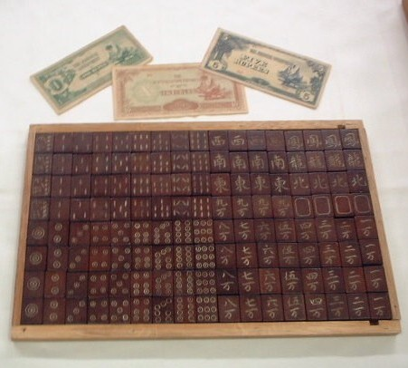
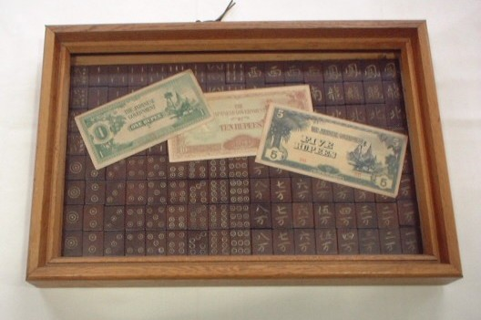

村山俊男という方が、ビルマ（現ミャンマー）でイギリス軍の捕虜になっていたときに作成した牌。一緒に写っているお金は、戦時中に日本が発行した軍票（賭け金はこれで精算したという）。
村山俊男氏は1978（大正７）年、京都府に生まれた。機関銃兵としてビルマ（現ミャンマー）方面に出征、ラングーン（現ヤンゴン）の北方、ペグー近辺の山中で終戦を迎えた。昭和２１年までイギリス軍下にて抑留され、使役生活を送った。その間に日本兵数人が協力して、このような麻雀牌を１０組ほど造ったという。
大工が本職の兵士がチーク材の枕木を鋸で切り、レンガで表面をこすってなめらかにした。達筆な兵士が表面に字牌や万子の字を書き、指物師（家具職人）が本職であった村山氏が五寸釘を使って彫刻した。筒子は五寸釘の先端をヤスリで削って三つ又にし、それを回転させて彫ったという。
色は、陸軍配給の２色エンピツ（両端がそれぞれ赤と青）と、マラリアの特効薬であるストリキニーネの黄色で三原色を作り出して塗ったという（現在、色は褪せてしまっている）。
この牌は日本兵の間に好評であったが、この１セットの他はすべて散逸してしまった。村山氏はこの１セットを持って帰国し保存していたが、縁会って昨年、大阪商業大学アミューズメント産業研究室に収蔵された。

いま“ なんでも鑑定団 ”が大人気。しかしあそこでの価格は、基本的に骨董品としての評価額。骨董品となれば工芸品としての完成度・美しさ・材料・保存度・いわく因縁・現在の需要度（どれくらいのコレクターがいるか）などの要素が勘案される。
しかし物にはそれ以外の見地からの評価もある。たとえば映画・インディジョーンズに出てきたイエス・キリスト愛用の杯（聖杯）、材質は普通の木で見た目も質素なものだった。しかしホントに発見されたら、とてもじゃないが値段がつかない。この枕木牌も同じこと。美術骨董品的な見地からの価格は別として、麻雀の文化/歴史の資料としての見地からは超一級品。
|